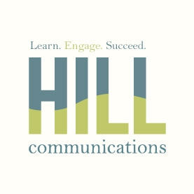
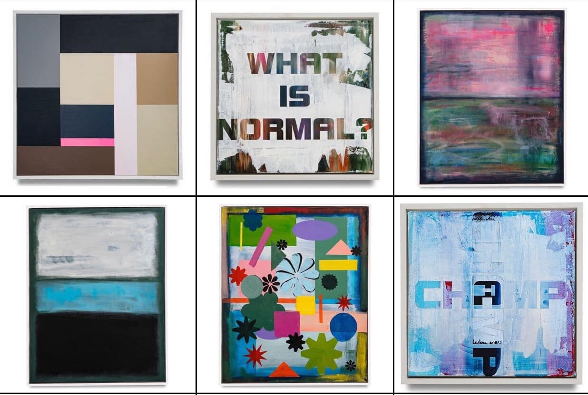
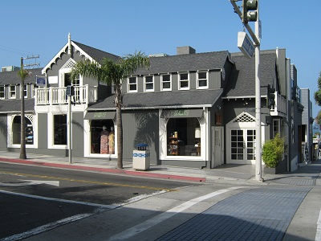

Experience
Newhouse
I am a sophomore studying public relations in the S.I. Newhouse School of Public Communications. Public relations is an important component of all companies and organizations because it holds them accountable for their actions. I hope to pursue a career in the entertainment industry in the future because I enjoy the fast pace nature of the field.

iSchool
I am a sophomore studying information management and technology in the School of Information Studies. I decided to add a dual major this past semester as I believe this will help strengthen my knowledge and give me a more competitive edge as an individual entering the professional field during the digital age.

Hill Communications
I am an account executive for the Newhouse 44 Account as a part of Hill Communications. Hill Communications is a student-run public relations firm which benefits local organizations through providing them with free services and allowing students to benefit from gaining experience. My account, Newhouse 44, connects students with Newhouse alumni in order to provide mentor-mentee relationships.
Delta Delta Delta
I am a member of the Omicron Chapter of Delta Delta Delta at Syracuse University. In addition to being a member, I serve on the executive board as the Vice President of Chapter Programming and Development. This role requires me to enforce the laws which govern our organization and ensure all members are held accountable for their actions.

Kelly Styne Art
I have served as the social media manager for Kelly Styne Art for the past four years. This role requires biweekly posts on Instagram as well as frequent customer engagement. I must stay up-to-date with trends in order to have an understanding of the consumer's wants and wishes in order to maximize sales.

Wright's
I have worked at Wright's in my hometown of Manhattan Beach, California, since I was a freshman in high school. This job requires a knowledge of brands and current trends, as well as strong skills in communicating with customers. This job, as my first work experience, provided me with knowledge of how to be mature and taught me a lot about professionalism.